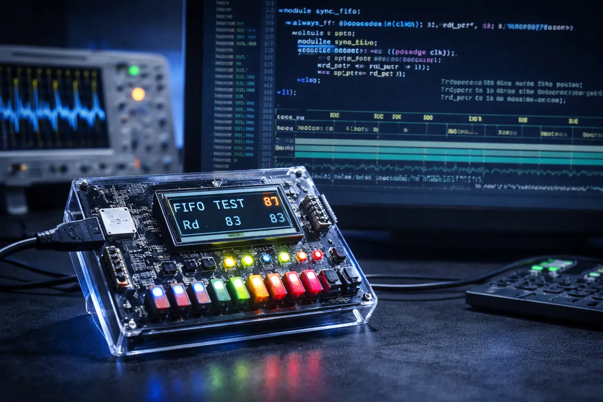

Each record preserves a concise account of the system, its engineering focus, and the public source where available.

01 // RTL + VERIFICATION
Synchronous FIFO
A parameterized FIFO design with explicit full/empty behavior, read/write pointers, occupancy tracking, and a self-checking testbench. The design safely handles simultaneous read and write while focusing on edge cases and hardware-real behavior.
A digital system that combines a datapath with a controller FSM to perform arithmetic operations and display results on a 7-segment interface. The architecture separates operand storage, arithmetic, result formatting, and control.
A complete acquisition and analysis workflow: capturing EMG sensor output, streaming it through a microcontroller, then processing and visualizing it in Python. The work focuses on stable capture, noise reduction, and usable muscle-signal data.
An optical emergency communication system that converts text into high-speed Morse-code flashes, captures those flashes with a Raspberry Pi Camera Module 3 Wide, and processes messages through a local pipeline.
A research-friendly GUI built to support repeatable experimental data collection by integrating NI-DAQ and Arduino hardware into an accessible capture workflow.
A discontinued CubeX Trio rebuilt into an open-source, repairable Marlin printer with modern electronics, standard filament, and a BIGTREETECH SKR V1.4 Turbo with TMC2209 drivers.